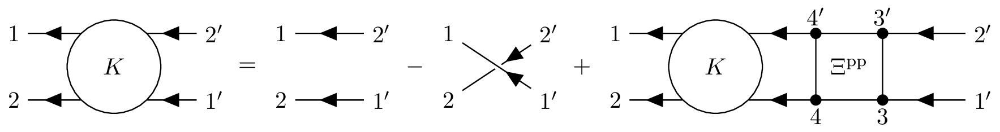
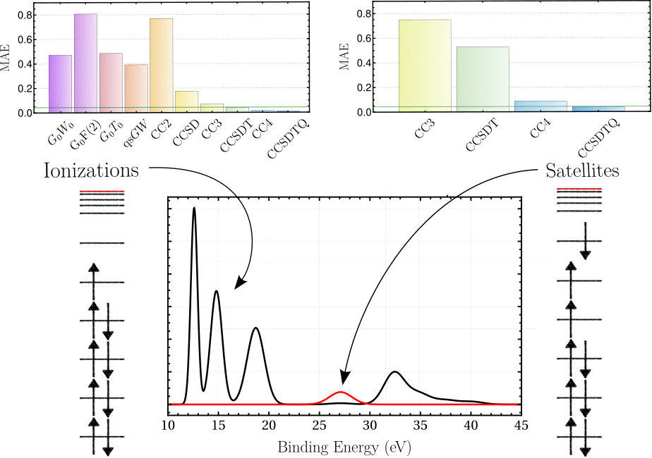
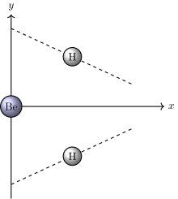
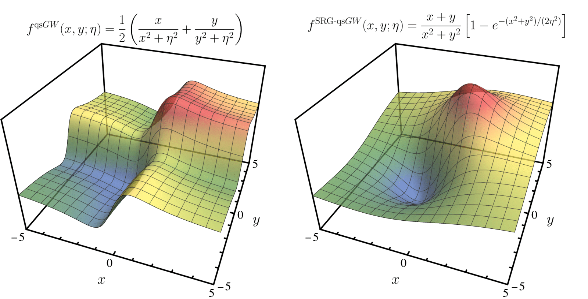
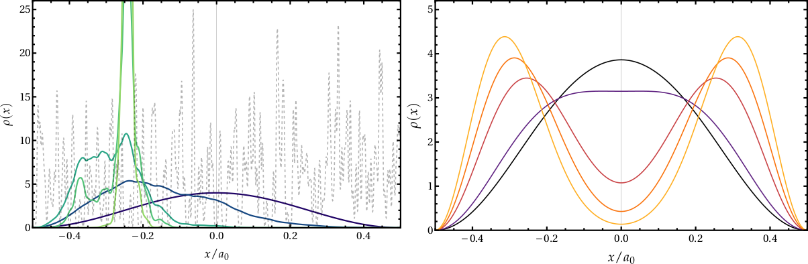
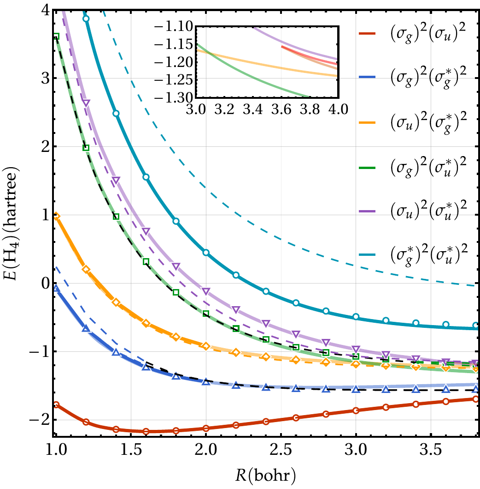
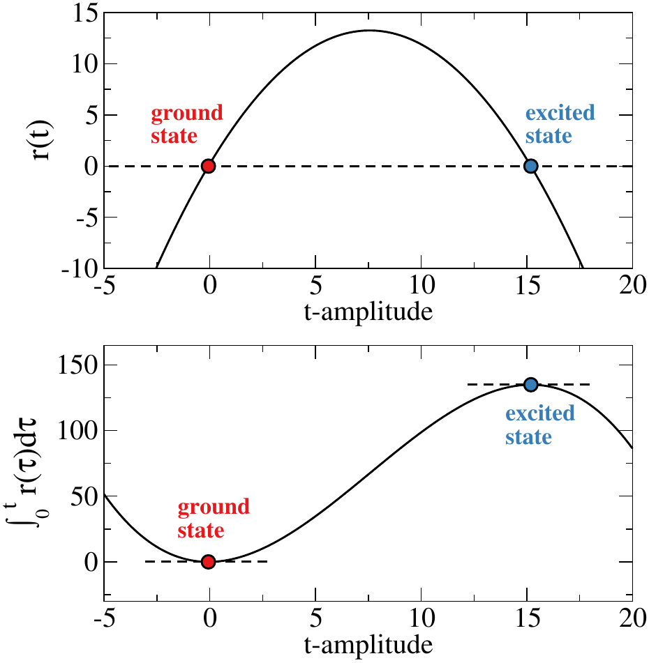
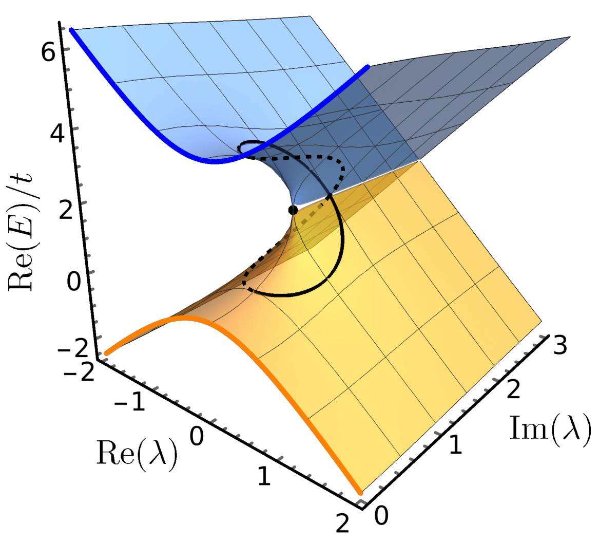

Publications
You can find a more concise list of my publications here.
16. An algebraic-diagrammatic construction for vertex corrections to the \(GW\) self-energy (pdf/si)
14. Parquet theory for molecular systems: Formalism and static kernel parquet approximation (pdf/si)
13. Anomalous propagators and the particle-particle channel: Bethe-Salpeter equation (pdf/si)
A. Marie, P. Romaniello, X. Blase and P.-F. Loos.
J. Chem. Phys. 162, 134105 (2025). | Erratum | arXiv

10. Reference energies for valence ionizations and satellite transitions (pdf)
A. Marie and P.-F. Loos.
J. Chem. Theory Comput. (Open access) 20, 4751 (2024). | arXiv

9. Can \(GW\) handle multireference systems? (pdf/si)
A. Ammar, A. Marie, M. Rodríguez-Mayorga, H. G. A. Burton, and P. F. Loos.
J. Chem. Phys. 160, 114101 (2024). | arXiv

7. A similarity renormalization group approach to Green's function methods (pdf/si)
A. Marie and P.-F. Loos.
J. Chem. Theory Comput. (Open access) 19, 3943 (2023). | arXiv

6. Excited states, symmetry breaking, and unphysical solutions in state-specific CASSCF theory (pdf/si)
5. Connections between many-body perturbation and coupled-cluster theories (pdf)
R. Quintero-Monsebaiz, E. Monino, A. Marie and P.-F. Loos.
Journal of Chemical Physics (Open Access) 157, 231102 (2022). | arXiv
\begin{equation*} \boldsymbol{\Sigma}^{GW} = \boldsymbol{V}^{\text{2h1p}} \cdot \boldsymbol{T}^{\text{2h1p}} + \boldsymbol{V}^{\text{2p1h}} \cdot \boldsymbol{T}^{\text{2p1h}} \end{equation*}
4. Real space Mott-Anderson electron localization with long-range interactions: exact and approximate descriptions (pdf/si)
A. Marie, D. P. Kooi, J. Grossi, M. Seidl, Z. H. Musslimani, K. Giesbertz and P. Gori-Giorgi.
Physical Review Research (Open Access) 4, 043192 (2022). Editors' suggestion | arXiv

3. Variational coupled cluster for ground and excited states (pdf)
A. Marie, F. Kossoski, and P.-F. Loos.
J. Chem. Phys. (Open Access) 155, 104105 (2021). | arXiv

2. Excited states from state-specific orbital-optimized pair coupled-cluster (pdf/si)
F. Kossoski, A. Marie, A. Scemama, M. Caffarel, and P.-F. Loos.
J. Chem. Theory Comput. (Open Access) 17, 4756 (2021). | arXiv

1. Perturbation theory in the complex plane: exceptional points and where to find them (pdf)
A. Marie, H. G. A. Burton, and P.-F. Loos.
J. Phys.: Condens. Matter (Open Access) 33, 283001 (2021). | arXiv
